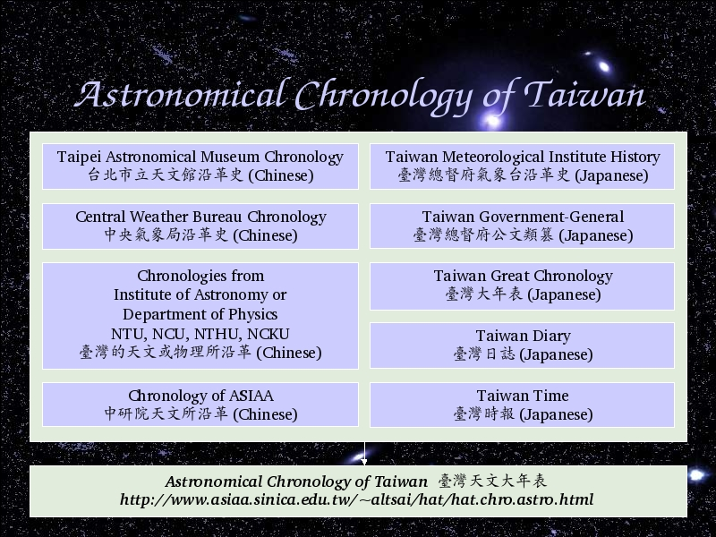

Voice Over:
Finally, I created astronomical chronology of taiwan.
I collected information from both Chinese reference and Japanese reference, and keep updating.
This website,
https://tara.tw/~altsai/hat/hat.chro.astro.html (in chinese version)
shows you for detail.